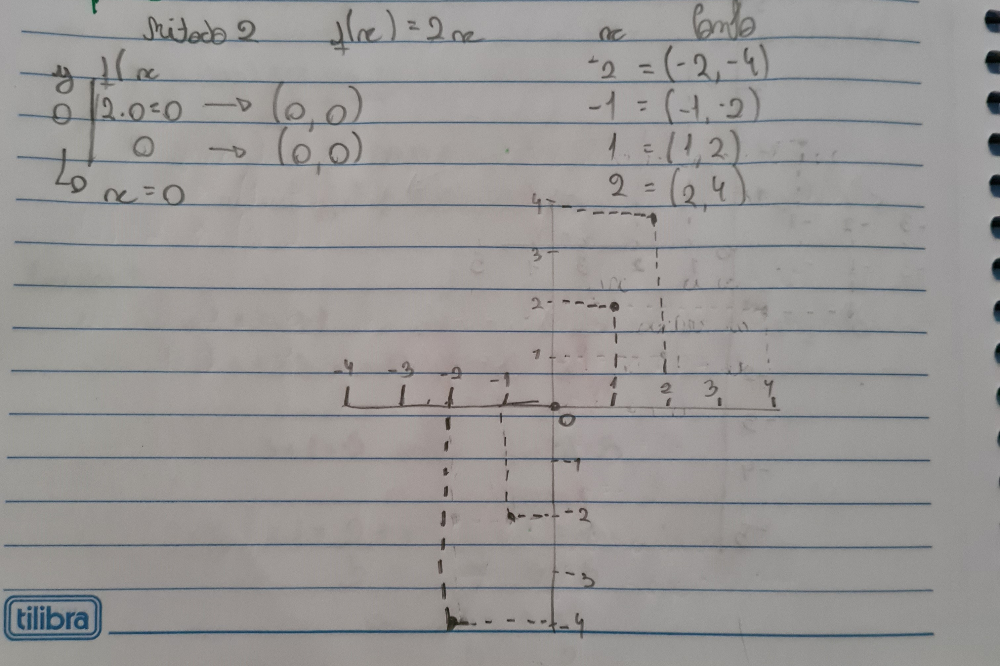
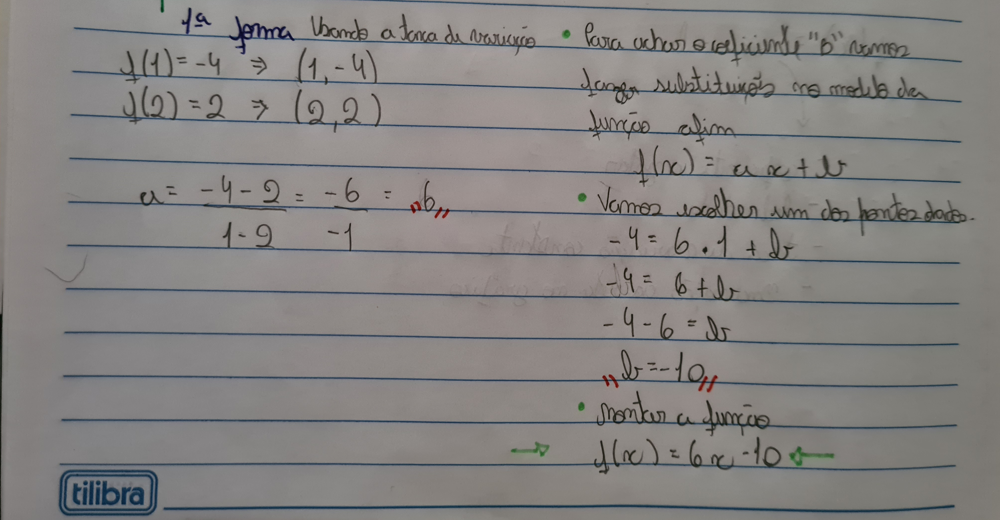

Nessa parte irei dizer os conteúdos que tive dificuldade, o primeiro será os Gráficos das funções afim e a Determinação da lei da função.
Essa parte do conteúdo fiquei bem "perdido", não consegui aprender muito bem os Gráficos principalmente onde achar os pontos com o método 1 e método 2, com eles não consegui me localizar muito bem quando usar cada um fazendo assim que eu não pegasse o conteúdo por completo
Aqui a baixo vai um exemplo de atividade realizada por mim já corrigida utilizando o método 2, onde apaguei várias vezes até conseguir fazer sozinho:
Essa é outra parte do conteúdo que não consegui acompanhar muito bem também, para determinar a lei da função existem duas formas a Usando a taxa de variação e Usando sistemas de equações. A formas usando a taxa de variação pra mim não ficou muito clara novamente não sei muito bem qual é a melhor de usar, com essa dúvida fiz resumos da taxa de variação.
